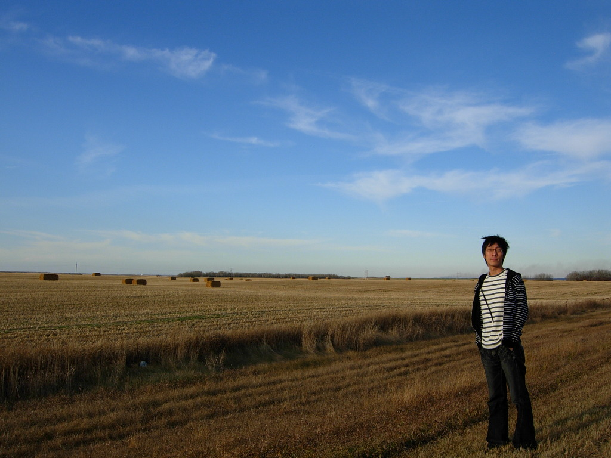
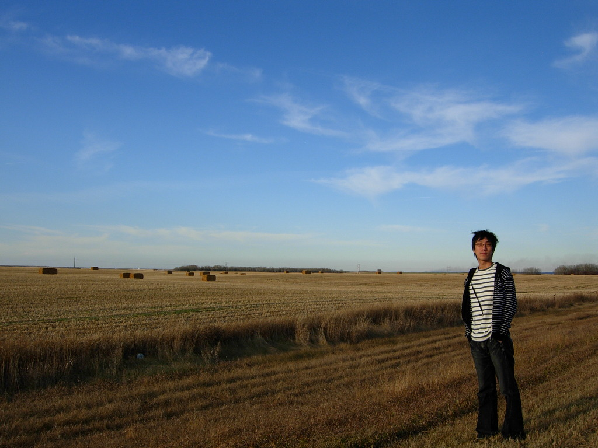

2009-11-15 16:08:47

티스토리 달력 2010 공모.
캐나다에서 세훈이와 차를 타고 가다가 너무 풍경이 멋있어서 갑자기 내려서 찍은 사진. 내가 가지고 있는 내 사진 중에서 가장 마음에 드는 사진이다.
캐나다에서의 지평선은 정말 멋있었다. 태어나서 처음보는 지평선...

티스토리 달력 2010 공모.
캐나다에서 세훈이와 차를 타고 가다가 너무 풍경이 멋있어서 갑자기 내려서 찍은 사진. 내가 가지고 있는 내 사진 중에서 가장 마음에 드는 사진이다.
캐나다에서의 지평선은 정말 멋있었다. 태어나서 처음보는 지평선...